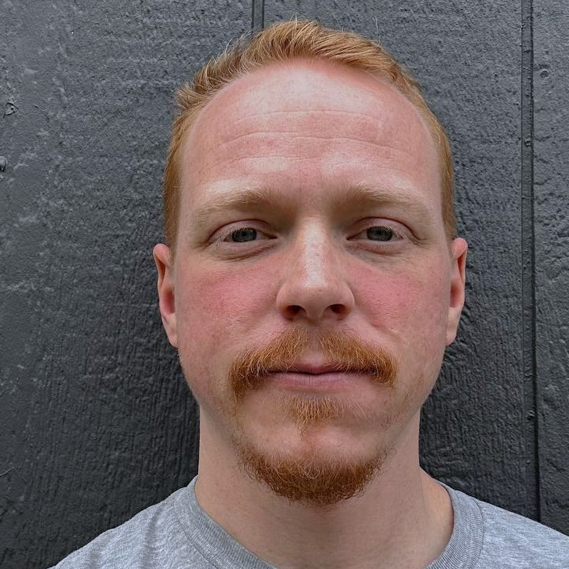

Tyler Mock's Bio
Background in computer networking for the Air Force specializing in airborne networks with some experience in desktop support. Programming languages include python and java, looking forward to learning C++ for unreal engine.
Video games have always been a passion of mine since I was 6 and being able to create one has long been a goal of mine. I hope to utilize my extensive gaming experience to create a polished product that our team can be proud of.